Guia de contexto
O desenhista antes do pintor
Van Gogh decidiu ser artista em 1880, aos 27 anos, e morreu em 1890. Nesses dez anos fez mais de mil desenhos. Os dois primeiros anos foram quase só desenho, por escolha: ele achava que pintar sem saber desenhar era construir sem fundação.
Ele não teve escola longa. Montou a própria. Copiou mais de uma vez a série inteira dos Exercices au fusain de Charles Bargue, estudou os manuais de perspectiva de Armand Cassagne, copiou Millet, e mandou construir uma moldura de perspectiva para levar à rua. É um método que você pode repetir, e este curso segue a mesma ordem.
Como você já desenha bem, o curso não ensina proporção nem sombra. Ele ensina um idioma. As quatro ideias abaixo sustentam tudo o que vem depois.
- Cada substância tem a sua marcaCéu, trigo, telhado, barba e casca de árvore nunca recebem o mesmo traço. O desenho é um mapa de texturas com legenda.
- A direção do traço é a formaO traço acompanha a superfície: contorna a manga, deita com o campo, sobe com o cipreste. Ele nunca preenche por preencher.
- O tamanho da marca é a distânciaMarca grande e espaçada está perto. Marca pequena e apertada está longe. A perspectiva dele é feita de escala de marca, quase sem degradê.
- O valor vem da densidadeNa fase madura não há esfumado. Escuro é mais marca por centímetro, claro é papel deixado em paz.
Desenhar é abrir caminho através de uma parede de ferro invisível que parece existir entre o que se sente e o que se consegue fazer. Não adianta bater nela com força: é preciso miná-la e atravessá-la com a lima, devagar e com paciência.Paráfrase de uma carta a Theo, Haia, outubro de 1882
Dez anos em nove endereços
| Anos | Lugar | Material principal | O que muda no traço |
|---|---|---|---|
| 1880–81 | Borinage, Bruxelas, Etten | Lápis, carvão | Cópias de Bargue e Millet. Figuras duras, contorno fechado. |
| 1882–83 | Haia | Lápis de carpinteiro, giz litográfico | Contorno com peso, figura que enche a página, vistas com a moldura de perspectiva. |
| 1883–85 | Drenthe, Nuenen | Giz preto natural, carvão | Forma construída pela massa. Camponeses em ação, folha grande. |
| 1885–86 | Antuérpia | Giz, carvão | Academia por pouco tempo. Briga com o desenho pelo contorno. |
| 1886–88 | Paris | Lápis, pena | Gravura japonesa: recorte, área plana, horizonte alto, textura por padrão. |
| 1888–89 | Arles | Pena de junco sobre grafite | O alfabeto de marcas completo. Pontos, tracinhos, vírgulas. Sem esfumado. |
| 1889–90 | Saint-Rémy | Pena de junco, lápis, giz preto | As marcas se alongam e se ligam. Tudo ondula no mesmo ritmo. |
| 1890 | Auvers-sur-Oise | Lápis, giz, pincel | Setenta dias. Traço rápido e solto, cadernos de bolso. |
Antes de começar
Materiais e a tradução da pena
Boa notícia para quem trabalha com lápis e carvão: metade da obra desenhada dele foi feita exatamente com isso, e quase todo desenho a pena de Arles tem um esboço de grafite por baixo. A tabela mostra o que ele usava e o que comprar hoje.
| Ele usava | Equivalente hoje | Serve para |
|---|---|---|
| Lápis de carpinteiro | Lápis de carpinteiro macio ou grafite integral 6B a 9B | Traço largo de chapa e fino de quina no mesmo lápis. É a ferramenta da Haia. |
| Giz preto natural | Conté preto, pierre noire ou lápis carvão | Preto fosco e quente, sem o brilho do grafite. Figuras de Nuenen. |
| Giz litográfico | Lápis litográfico ou dermatográfico preto | O preto mais profundo. Não apaga: ele raspava com canivete para abrir luzes. |
| Carvão vegetal | Carvão de salgueiro ou de vinha, em bastão | Estrutura e massa. Use a lateral do bastão, não a ponta. |
| Leite | Fixador em spray | Ele despejava leite sobre o grafite para fixar e tirar o brilho. Curiosidade histórica: use fixador. |
| Papel de aquarela e papel vergê | Canson Ingres, Mi-Teintes cinza claro, ou aquarela de grão médio | O grão quebra o traço e dá a textura. Papel liso mata o efeito. Trabalhe em A3 ou maior. |
| Miolo de pão | Borracha limpa-tipos | Levantar luz do carvão. Só nas lições 1 e 2. |
Como fazer um lápis se comportar como pena de junco
A pena de junco é um pedaço de cana cortado em bisel. Ela tem quatro manias, e são elas que dão a cara dos desenhos de Arles. Reproduza as manias e o material deixa de importar.
- Ponta romba, largura quase constante. Não aponte o lápis. Gaste a ponta num papel de rascunho até ficar chata e mantenha assim.
- A tinta acaba no meio do traço. O traço começa cheio e morre seco. No lápis, solte a pressão no último terço de cada traço.
- Não existe degradê. Cada toque é preto ou não existe. Escolha uma pressão por zona e não mude dentro dela.
- Cada toque é definitivo. Guarde a borracha. Erro se corrige com mais marca por cima.
Tenha três "penas" na mão, como ele tinha junco grosso, junco fino e pena de ave: um bastão de carvão comprimido quebrado em pedaços de 2 cm (grossa), um 6B rombo (média) e um 2B com ponta (fina, só para o longe).
A moldura de perspectiva
Em 1882 ele encomendou a um carpinteiro e a um ferreiro uma moldura de madeira com fios esticados (um vertical, um horizontal e duas diagonais), montada sobre duas estacas com ponta de ferro para cravar no chão irregular das dunas. Olhando através dela, o motivo já vem dividido, e basta repetir as mesmas divisões a lápis no papel.
Faça a sua: um passe-partout de papelão com janela de 20 × 30 cm e quatro pedaços de linha preta presos com fita. Segure sempre à mesma distância do olho. Você vai usá-la na Lição 1 e abandoná-la na Lição 4, como ele fez.
Lição 1 · Haia, 1882–83
Contorno com peso
Na Haia ele teve algumas aulas com o pintor Anton Mauve, colecionou gravuras de ilustradores ingleses da revista The Graphic e desenhou quem aceitava posar por pouco: Sien Hoornik, com quem vivia, e os velhos do asilo, os "homens órfãos". É a fase do preto e branco duro, do lápis de carpinteiro e da figura que ocupa a folha inteira.
O que aprender aqui: uma linha de contorno que carrega peso e emoção sozinha, sem depender de sombra.
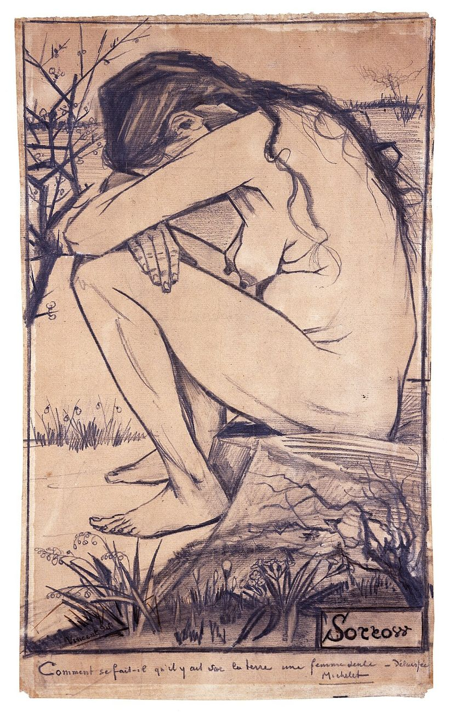
Haia, abril de 1882. Lápis, pena e tinta. The New Art Gallery Walsall.
Olhe para
- Uma linha só. O contorno é contínuo e anguloso, quase sem modelado por dentro. As costas são três retas quebradas, não uma curva.
- O peso muda de lado. A linha engrossa embaixo da coxa, no pé e onde o corpo encosta na pedra. Em cima, onde bate luz, ela afina.
- O rosto escondido. A emoção toda está na pose dobrada. Ele repete o recurso em Worn Out.
- O entorno é ralo. Poucos traços de relva e galhos, para a figura pesar mais.
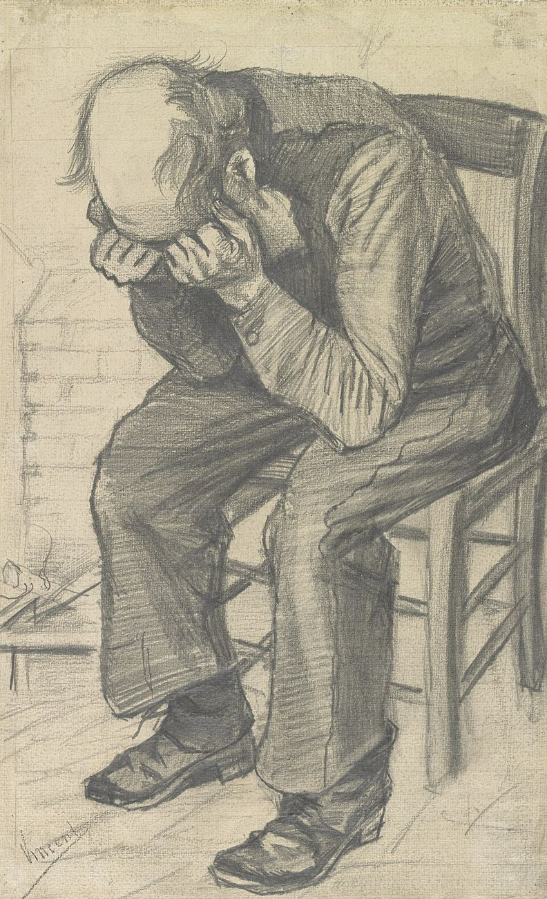
Haia, novembro de 1882. Lápis sobre papel de aquarela. Van Gogh Museum.
A hachura das calças e das mangas dá a volta na forma, como aros de um barril.
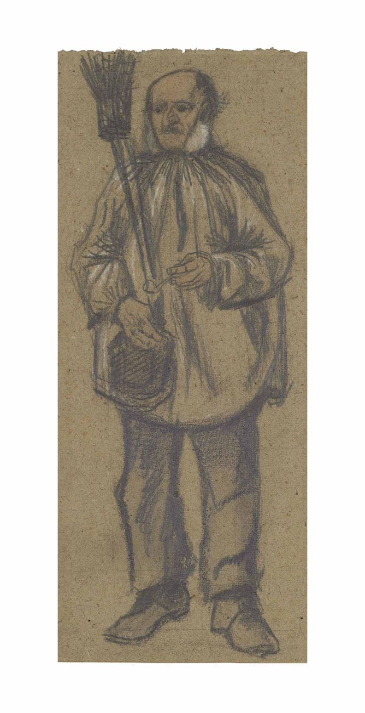
Haia, 1882. Lápis.
A silhueta resolve tudo. Roupa pesada, pés grandes, nenhum cenário.
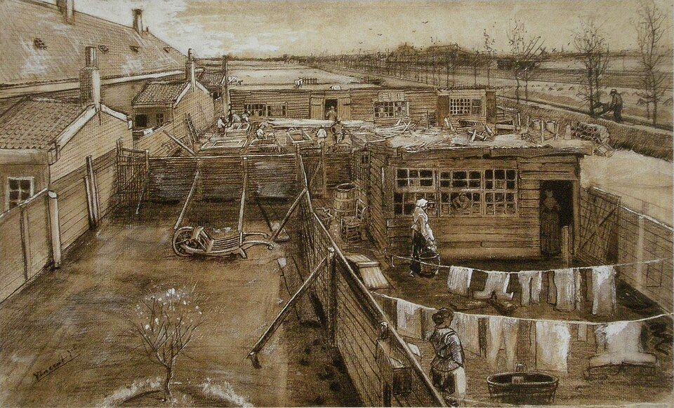
Haia, maio de 1882. Lápis, giz preto, pena e pincel, com realces em branco. Kröller-Müller Museum.
Olhe para
- A moldura trabalhando. As cercas e os telhados correm para um ponto de fuga preciso. Este desenho saiu da janela do ateliê.
- Texturas já separadas. Telha, tábua, terra e roupa branca têm tratamentos diferentes. É o embrião do alfabeto de Arles, seis anos antes.
- Figuras pequenas. Elas existem para dar escala e fazer o olho andar para o fundo.
Exercícios
Olho no sapato, nunca no papel, lápis sem levantar. Ande na velocidade de uma formiga. Ele desenhou e pintou botas gastas várias vezes: um objeto com história rende mais que um objeto bonito.
Pronto quando: o terceiro desenho tem dobras e costuras que você não tinha notado no primeiro.
Modelo ou foto sua. Só linha, sem sombra. Use três pesos: fina de quina onde bate luz, média no geral, grossa de chapa embaixo das formas e em todo ponto onde o corpo apoia em alguma coisa.
Pronto quando: dá para saber de onde vem a luz sem nenhuma hachura.
Copie a Prancha 2. Regra única: toda hachura dá a volta na forma. Na perna ela é curva como elástico de meia, no encosto da cadeira ela é reta.
Pronto quando: a perna parece cilíndrica mesmo com valor quase uniforme.
Monte a moldura de perspectiva e desenhe a vista de uma janela alta: quintal, telhados, rua. Marque primeiro onde cada fio cruza um canto de telhado ou muro. Só depois separe as texturas.
Pronto quando: há pelo menos quatro texturas diferentes e uma figura pequena dando escala.
Seis pessoas de corpo inteiro, de preferência de costas ou de perfil, cada uma com um objeto: guarda-chuva, sacola, vassoura. Silhueta primeiro, roupa como um bloco, pés maiores do que você acha certo.
Pronto quando: cada figura se reconhece pela silhueta preenchida de preto.
Lição 2 · Nuenen, 1884–85
A forma pela massa
No Brabante ele desenhou tecelões e camponeses. No verão de 1885 fez uma série de figuras grandes em giz preto: gente cavando, ceifando, respigando. Uma ideia mudou tudo nessa época. Ele leu que Delacroix dizia que os antigos não pegavam a forma pela linha e sim pelos meios, pelas massas ovais, e passou a construir a figura de dentro para fora.
Ele também escreveu ao irmão que ficaria desesperado se as figuras dele fossem "corretas" no sentido acadêmico. Queria os desvios e os exageros que deixam a figura mais verdadeira do que a medida exata. Guarde isso: nesta lição, mão grande e costas largas estão certas.
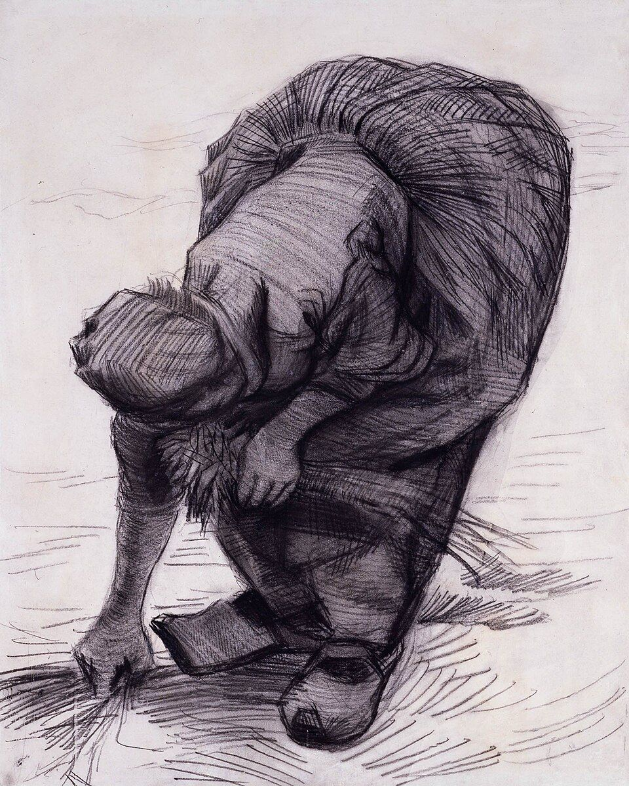
Nuenen, verão de 1885. Giz preto.
Olhe para
- Dois ovos. As costas e o quadril são duas massas ovais enormes. Tudo o mais se pendura nelas.
- Hachura em feixes. Os traços correm em grupos que abraçam o volume, mudando de direção a cada plano da saia.
- Contorno por último. A linha grossa só aparece onde a forma vira: no ombro, embaixo do braço, no tamanco.
- Peso embaixo. Mãos e tamancos são grandes e escuros. A figura está plantada no chão.
- Chão em meia dúzia de riscos. O fundo vazio é uma decisão.
Exercícios
Varrer, cavar, levantar uma caixa, torcer um pano. Peça a alguém ou use o temporizador da câmera. Só massas ovais feitas com a lateral do bastão. Contorno é proibido.
Pronto quando: a ação se entende em três manchas.
Uma pose de esforço. Dez minutos de massa com a lateral do carvão. Dez de hachura em feixes com conté, abraçando o volume. Dez de contorno pesado, só onde a forma vira ou apoia.
Pronto quando: menos da metade do perímetro da figura tem linha de contorno.
A sua mão livre segurando colher, martelo, caneca, corda. Doze numa folha só, como as folhas de estudo que ele fez para Os Comedores de Batata. Construa cada mão como uma caixa e cinco cilindros antes de qualquer unha.
Pronto quando: as mãos parecem capazes de apertar.
Perfil ou três quartos com luz lateral forte. Cubra a folha de cinza, levante as luzes com a borracha, carregue as sombras. Olhos, nariz e boca só entram nos cinco minutos finais.
Pronto quando: a três metros a cabeça já tem volume e caráter.
Copie a Prancha 5 em folha grande, em pé, movendo o braço a partir do ombro. Os originais têm cerca de meio metro de altura, e o gesto largo faz parte do resultado.
Pronto quando: a hachura muda de direção em pelo menos seis planos da saia.
Lição 3 · Paris, 1886–88
A lição japonesa
Em Paris ele passou alguns meses no ateliê de Fernand Cormon desenhando gessos, conheceu Émile Bernard e Toulouse-Lautrec e, com o irmão Theo, juntou centenas de gravuras japonesas baratas. Chegou a decalcar Hiroshige com papel quadriculado para estudar como aquilo era montado.
As gravuras ensinaram duas coisas. A primeira é composição: horizonte alto, primeiro plano cortado pela borda, diagonais fortes, vazio deixado vazio. A segunda é a que mais interessa aqui: nas gravuras, cada superfície tem um padrão gráfico próprio. Chuva é risco, água é onda repetida, relva é ponto. Em Arles ele vai fazer exatamente isso com a pena de junco, e vai escrever que quer desenhar depressa como os japoneses, "como um relâmpago".
Esta lição não tem prancha dele. A referência são as gravuras: procure Ameixeira em flor e Ponte sob a chuva, de Hiroshige, as duas que ele copiou a óleo em 1887.
Exercícios
A mesma vista seis vezes. Em todas o horizonte fica no terço de cima ou acima dele. Mude só o que entra no primeiro plano e onde a borda corta.
Pronto quando: você tem uma favorita e sabe dizer por quê.
Um tronco ou galho em primeiríssimo plano, escuro, atravessando a folha em diagonal e saindo por duas bordas. Atrás dele, a paisagem pequena e clara.
Pronto quando: o galho ocupa pelo menos um quarto da área e o desenho ainda tem profundidade.
Telhado, água, relva, casca, pedra, céu, parede, folhagem, terra arada. Cada quadrado usa um único tipo de marca repetida. Nada de sombra.
Pronto quando: outra pessoa acerta pelo menos seis das nove sem legenda.
Uma jarra, um gesso, uma bota. Só três valores, cada um chapado: papel branco, um cinza de hachura única, preto. Transição suave não vale.
Pronto quando: as três zonas têm bordas nítidas como numa gravura.
Lição 4 · Arles, 1888
O alfabeto de marcas
Ele chegou a Arles em fevereiro de 1888 e logo começou a cortar penas dos juncos que cresciam à beira dos canais. Em maio e julho subiu a colina de Montmajour, debaixo de mistral e mosquitos, e fez as grandes vistas da planície de La Crau, que considerava as melhores coisas que já tinha feito a pena. Em junho passou uns dias em Saintes-Maries-de-la-Mer e desenhou os barcos na praia em uma hora, sem moldura e sem medir, "deixando a pena correr".
No verão ele fez algo que vale como aula: redesenhou as próprias pinturas a pena para mandar a Bernard, a John Russell e a Theo. Para cada cor da tela ele precisou inventar uma marca. É o melhor exercício deste curso (4.4).
As doze marcas
Toque em qualquer quadro para ver a marca ser feita.
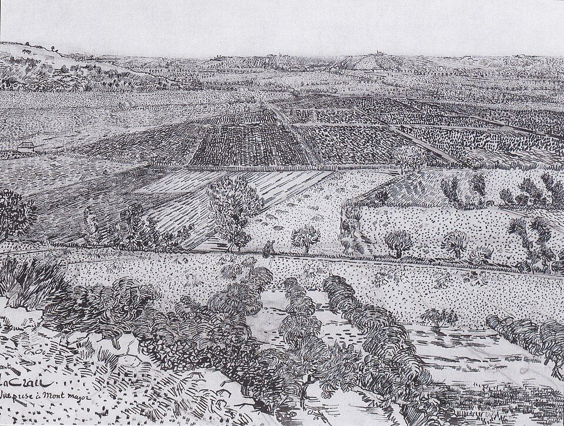
Arles, julho de 1888. Pena de junco e pena fina, tinta sobre grafite.
Olhe para
- Horizonte lá em cima. O céu é uma tira vazia. Quase toda a folha é chão.
- Faixas. A planície é uma pilha de faixas horizontais, cada campo com a sua marca: pontos, tracinhos, hachura curta.
- Marcas que encolhem. Embaixo os traços têm um centímetro. No horizonte são pontos de agulha.
- Sebes como pontuação. As fileiras de árvores escuras separam as faixas e dão ritmo.
Laboratório de profundidade
Mexa nos controles e veja o princípio funcionar. Leve o primeiro controle para 1 e o espaço morre: todas as marcas do mesmo tamanho viram papel de parede.
Em La Crau a razão passa de 8×. No Jardim com flores fica perto de 4×, porque a distância é curta.
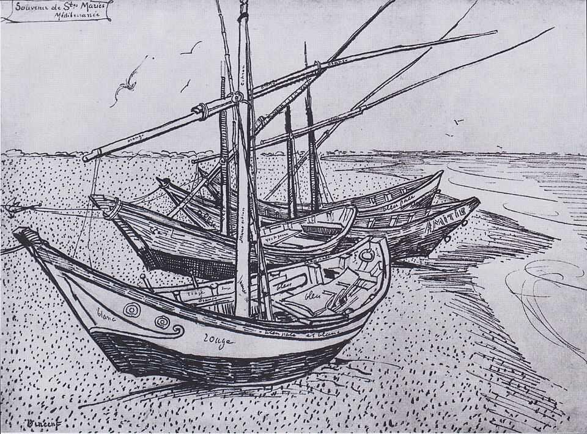
Junho de 1888. Pena de junco e tinta sobre grafite.
Contorno firme nos cascos, areia em pontos, mar em tracinhos deitados. Três substâncias, três marcas.
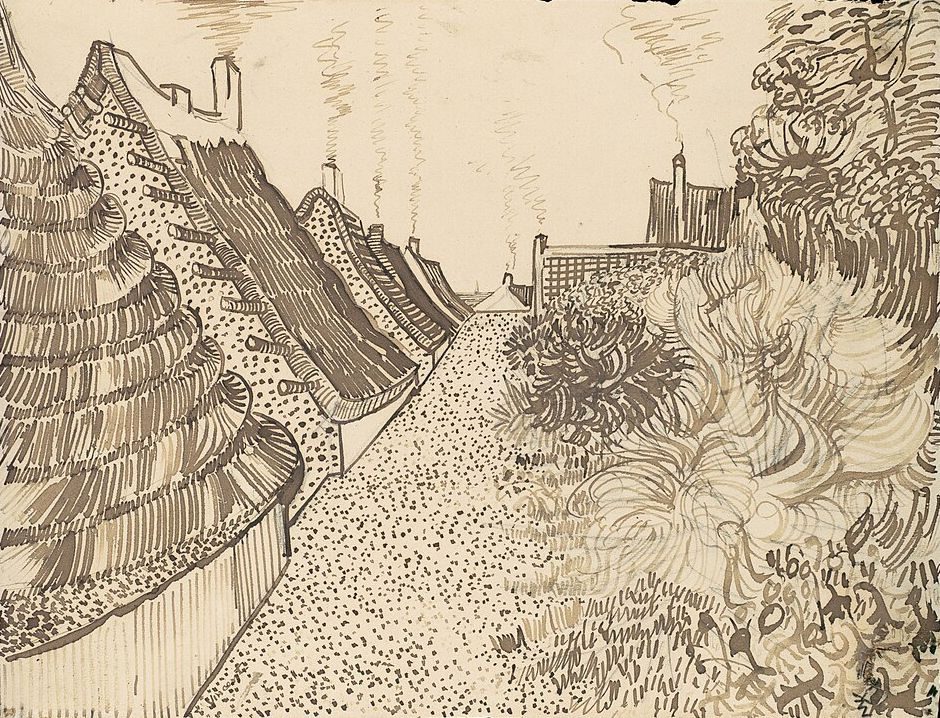
Verão de 1888. Pena de junco e tinta sobre grafite. Metropolitan Museum of Art.
Colmo pontilhado, caminho quase vazio, mato em laços. O céu fica em branco.
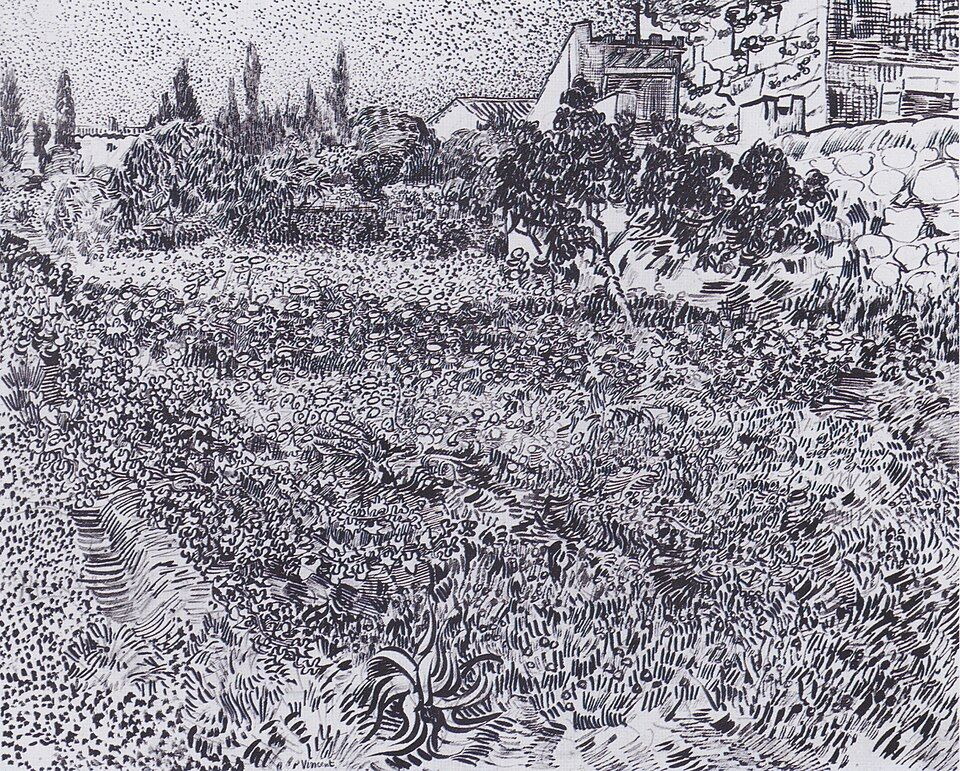
Arles, verão de 1888. Pena de junco e tinta.
A folha inteira está coberta e nada se confunde, porque cada canteiro tem um tamanho e um tipo de marca.
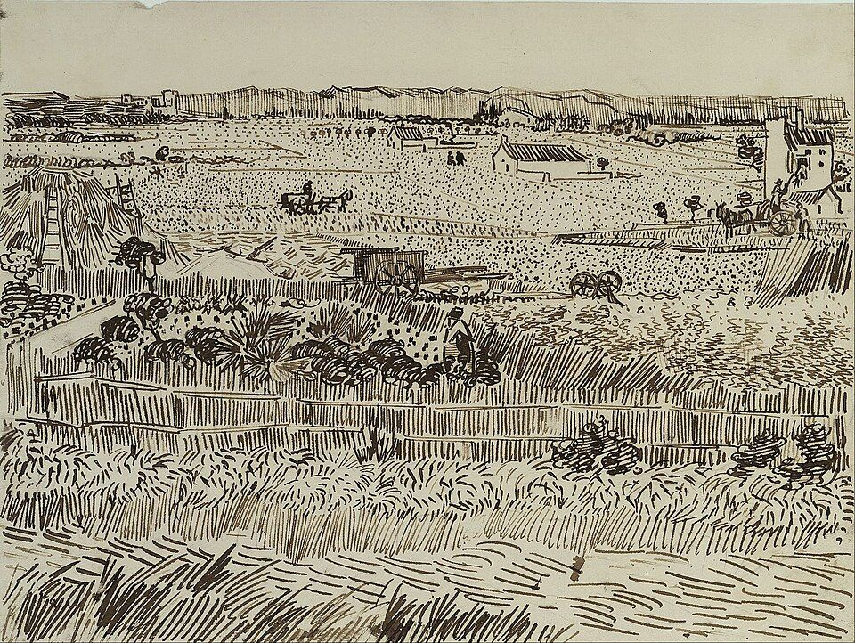
Arles, julho de 1888. Pena e tinta sobre grafite.
Feito a partir da pintura. O amarelo do trigo virou tracinho, o verde virou vírgula, a cerca virou pente.
As seis regras da folha de Arles
- Grafite primeiro, bem leveSó as grandes divisões: horizonte, faixas, silhuetas. Nenhum detalhe.
- Legenda antes do desenhoDecida no canto da folha qual marca vai para qual superfície.
- Do longe para o pertoComece pelo horizonte com a ponta fina e vá engrossando a ferramenta ao descer.
- Uma zona, uma pressãoO escuro se faz apertando as marcas umas contra as outras.
- Papel reservadoCéu, caminho ou água ficam quase em branco. O vazio é o que deixa o resto vibrar.
- Acentos no fimMeia dúzia de pretos máximos, no primeiro plano e nas sebes. Depois pare.
Exercícios
As doze marcas acima, uma por célula. Em cada célula faça três faixas: grande, média, pequena. Cuide do ritmo. As marcas dele são regulares como escrita, não aleatórias.
Pronto quando: a folha parece uma página de caligrafia.
Três tiras: pontos, tracinhos, hachura. Cinco casas do claro ao escuro em cada uma. A pressão fica idêntica nas cinco. Só muda a distância entre as marcas.
Pronto quando: de olhos semicerrados as três tiras mostram os mesmos cinco cinzas.
Uma planície inventada, como no laboratório: horizonte no quinto superior, cinco faixas, uma marca por faixa, razão de escala de pelo menos 6×. Duas sebes escuras. Céu vazio.
Pronto quando: virando a folha de cabeça para baixo, o chão ainda afunda.
Escolha uma pintura dele de Arles (A Colheita, O Semeador, Barcos em Saintes-Maries) ou uma foto colorida sua. Liste as cores, dê uma marca a cada uma e redesenhe tudo em preto. Depois compare com a versão a pena que ele fez.
Pronto quando: dá para apontar no desenho onde estava cada cor.
Copie a Prancha 6 seguindo as seis regras na ordem. Conte as faixas antes de começar. Resista a desenhar árvores: as sebes são fileiras de laços escuros.
Pronto quando: a sua cópia tem tantos tipos de marca quanto o original.
Um lugar com vista aberta: praça, estacionamento, beira de estrada, laje. Sem moldura, sem borracha, sem medir com o lápis. Quando o relógio apitar, acabou.
Pronto quando: você terminou no tempo. A qualidade vem com a repetição: faça este exercício toda semana até o fim do curso.
Lição 5 · Arles, agosto de 1888
Um rosto em marcas
Joseph Roulin trabalhava no correio da estação de Arles e virou amigo e modelo. Van Gogh o pintou no fim de julho de 1888 e em seguida refez o retrato a pena. O desenho mostra que o alfabeto da paisagem serve para gente: o rosto é tratado como um terreno, com planos e direções.
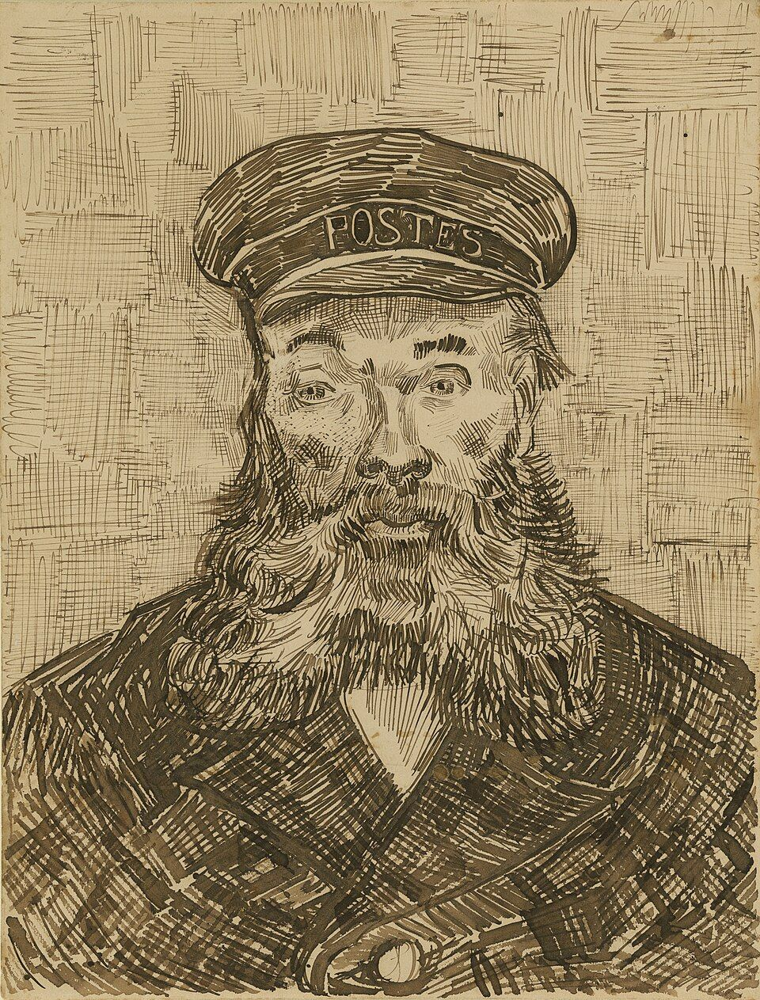
Arles, agosto de 1888. Pena de junco e pena de ave, tinta e giz preto. J. Paul Getty Museum.
Olhe para
- Quatro substâncias, quatro marcas. Barba em curvas enroscadas, casaco em hachura grossa cruzada, pele em pontos e tracinhos, fundo em treliça.
- A pele tem direção. Os tracinhos da testa são horizontais, os da lateral do nariz descem, os da maçã do rosto giram.
- Olhos com contorno pesado. São o ponto mais escuro e mais nítido do rosto. O olhar segura a folha.
- O fundo trabalha. A treliça é mais clara e mais regular que tudo, e empurra a cabeça para a frente.
- O boné é quase só contorno. Uma zona calma no meio de tanta textura.
Exercícios
No espelho, com luz lateral. Desenhe o rosto como um mapa de regiões fechadas: testa, lateral do nariz, maçã, queixo, pálpebra. Dentro de cada região, uma seta indicando para onde a superfície corre.
Pronto quando: há entre 15 e 25 planos, cada um com a sua seta.
Refaça o autorretrato maior. Agora cada plano recebe tracinhos curtos na direção da seta. Planos de sombra recebem tracinhos mais juntos, com a mesma pressão.
Pronto quando: o rosto tem volume sem nenhuma área esfumada.
Alguém com cabelo ou barba marcantes e roupa de textura clara: tricô, jeans, casaco pesado. Escreva a legenda no canto antes de começar: pele, pelo, tecido, fundo.
Pronto quando: cobrindo o rosto com a mão, ainda dá para dizer de que é feita cada parte.
Copie a Prancha 11. Comece pelos olhos e pelo contorno do boné, depois a barba, depois o casaco. O fundo vem por último e precisa ficar mais claro que o casaco.
Pronto quando: a barba e o casaco não se confundem, mesmo tendo o mesmo valor.
A mesma cabeça simplificada três vezes, com três fundos: treliça, pontilhado, vazio. Veja como a cabeça avança ou recua em cada um.
Pronto quando: você sabe qual fundo usaria para uma pessoa calma e qual para uma inquieta.
Lição 6 · Saint-Rémy, 1889–90
Ritmo: tudo ondula
Em maio de 1889 ele se internou no asilo de Saint-Paul-de-Mausole. Desenhou o jardim, os campos atrás do muro, as oliveiras. Em junho escreveu que os ciprestes não saíam da cabeça dele, que eram belos em linha e proporção como um obelisco egípcio, e que ninguém ainda os tinha feito como ele os via.
O traço muda. As marcas curtas de Arles se alongam, se curvam e se ligam umas às outras. Terra, árvore e céu passam a obedecer ao mesmo movimento. O risco é virar maneirismo, redemoinho por redemoinho. O antídoto está nos próprios desenhos: por baixo das curvas há sempre uma estrutura firme e algum elemento reto para contrastar.
Um detalhe útil para você: em 1890, doente e sem poder sair, ele encheu folhas pequenas a lápis e giz preto com camponeses e paisagens do Norte, desenhados de memória.
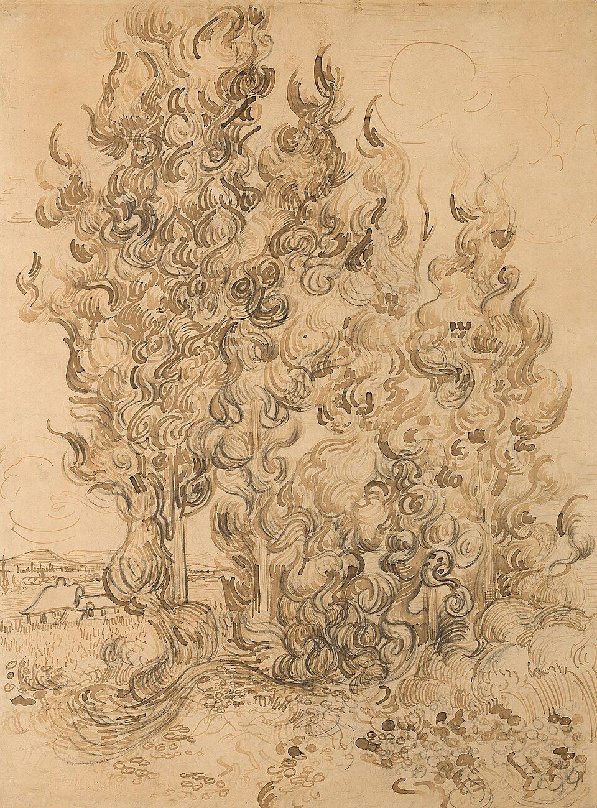
Saint-Rémy, junho de 1889. Pena de junco e tinta sobre grafite.
Olhe para
- A árvore não tem contorno. A silhueta aparece pela soma de centenas de cachos.
- Anatomia do cacho. Cada um é um C ou um S feito de dois a quatro traços paralelos, sempre subindo.
- Escuro no miolo. Os cachos se apertam no centro e na base. Nas bordas eles se soltam e deixam o papel respirar.
- O chão acompanha. A relva embaixo é feita de ondas longas que repetem o movimento da copa em outra escala.
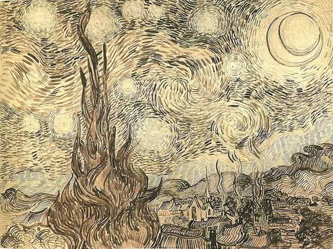
Saint-Rémy, junho de 1889. Pena e tinta. Esteve na Kunsthalle de Bremen até a Segunda Guerra.
Olhe para
- Linhas de fluxo. Os tracinhos do céu seguem correntes, como limalha de ferro em volta de ímãs. Cada astro é um centro.
- Curva contra reta. A vila é feita de tracinhos retos e curtos. Sem ela o céu não teria com o que contrastar.
- Uma âncora escura. O cipreste é o único preto denso. Ele liga o chão ao céu.
Exercícios
Marque três centros na folha. Com o 2B bem leve, trace as linhas de corrente em volta deles, como num mapa meteorológico. Depois, com o 6B, cubra tudo de tracinhos alinhados às correntes.
Pronto quando: nenhum tracinho cruza outro.
Primeiro vinte cachos soltos: dez em C, dez em S, cada um com três traços paralelos. Depois monte um cipreste inteiro só com eles, apertando no miolo e soltando na borda.
Pronto quando: a árvore se lê como silhueta sem nenhuma linha em volta.
Procure a árvore mais retorcida do bairro. O tronco se desenha com linhas que acompanham a torção, como cordas. A copa vai em laços, o chão em ondas.
Pronto quando: tronco, copa e chão têm marcas diferentes e parecem soprados pelo mesmo vento.
Uma paisagem toda em curvas com um único elemento reto: casa, torre, poste, muro. Desenhe o elemento reto primeiro, com régua mental, e deixe o resto ondular em volta.
Pronto quando: tapando o elemento reto com o dedo, o desenho perde força.
Copie a Prancha 12. Esboce só o eixo e a largura máxima das duas árvores. Construa de baixo para cima, cacho por cacho. Chão por último.
Pronto quando: o miolo está pelo menos três vezes mais denso que as bordas.
Observe uma cena por cinco minutos sem desenhar. Vire as costas e desenhe o que ficou. A memória descarta o detalhe e guarda o ritmo, que é o que esta lição pede.
Pronto quando: o desenho tem menos coisas e mais movimento do que a cena.
Lição 7 · Auvers, 1890, e depois
O seu Arles
Em Auvers-sur-Oise ele viveu setenta dias, de maio a julho de 1890, e desenhou depressa em cadernos e folhas soltas, a lápis e giz. É o ponto em que o vocabulário já estava tão assimilado que ele não pensava mais nele.
Copiar ensina o idioma. Falar o idioma é outra etapa: usar as marcas dele no seu lugar e nas suas pessoas. Ele não desenhou Arles como se fosse o Japão, desenhou Arles com o que aprendeu do Japão. O projeto final é uma série de seis desenhos do seu mundo.
A série de seis
Horizonte alto, cinco faixas ou mais, céu reservado.
Folha saturada como o Jardim com flores. Nada se confunde.
Sem contorno. Só cachos, laços e cordas.
Massa primeiro, à maneira de Nuenen. Mãos e pés pesados.
Quatro substâncias, fundo ativo, olhos como ponto mais escuro.
Linhas de fluxo, um elemento reto, uma âncora escura.
Autoavaliação 0 de 8
Pendure os seis lado a lado e marque só o que vale para todos.
Dá para escrever a legenda de cada desenho depois de pronto.
Nenhuma área foi preenchida com hachura neutra.
A razão entre a maior e a menor marca passa de 5×.
Não há esfumado nem degradê nos desenhos de linguagem madura.
Pelo menos uma zona grande ficou quase em branco, de propósito.
Ele aparece onde a forma vira ou apoia, não em volta de tudo.
O desenho inteiro parece feito na mesma velocidade e pelo mesmo vento.
De longe, massas claras e escuras. De perto, caligrafia.
Cinco tropeços comuns
- Esfumar com o dedo. Apaga a marca, que é o assunto. Depois da Lição 2, dedo fora do papel.
- Papel de parede. Marcas todas do mesmo tamanho. Volte ao laboratório de profundidade.
- Contornar tudo. Vira livro de colorir. Tire metade das linhas de borda.
- Redemoinho sem estrutura. Curvas bonitas sobre um desenho mole. Faça o esboço de grafite mais rígido do que parece necessário.
- Folha pequena. Em A4 a mão desenha com os dedos. Estes desenhos pedem cotovelo e ombro.
Ritmo sugerido
Plano de 8 semanas
Cinco sessões por semana, de 45 a 90 minutos. A partir da semana 4, uma das sessões é sempre o exercício 4.6, uma hora ao ar livre sem medir.
| Semana | Lição | Exercícios | Foco |
|---|---|---|---|
| 1 | Haia | 1.1 a 1.5 | Peso de linha. Montar a moldura. |
| 2 | Nuenen | 2.1 a 2.5 | Massa antes do contorno. Folha grande. |
| 3 | Paris | 3.1 a 3.4 e repetir 2.1 | Composição japonesa. Textura por padrão. |
| 4 | Arles | 4.1, 4.2, 4.3, 4.6 | Alfabeto e escala de marca. |
| 5 | Arles | 4.4, 4.5, 4.6 | Tradução de cor. Estudo de La Crau. |
| 6 | Retrato | 5.1 a 5.5, 4.6 | O rosto como terreno. |
| 7 | Saint-Rémy | 6.1 a 6.6 | Fluxo, cacho, curva contra reta. |
| 8 | Projeto | A série de seis | O seu lugar na linguagem dele. |
Para ir mais fundo
Fontes e referências
- As cartas. Vincent van Gogh: The Letters, edição completa e anotada do Van Gogh Museum e do Huygens Institute. Muitas cartas trazem croquis. Leia as de Haia (1882) sobre a moldura e os materiais, e as de Arles (maio a agosto de 1888) sobre os desenhos a pena.
- Os desenhos em alta resolução. A coleção online do Van Gogh Museum, a do Metropolitan Museum e a do Kröller-Müller permitem dar zoom até o grão do papel.
- O catálogo de referência. Vincent van Gogh: The Drawings (Colta Ives, Susan Alyson Stein, Sjraar van Heugten e Marije Vellekoop, Metropolitan Museum of Art, 2005).
- O método que ele seguiu. Charles Bargue: Drawing Course, edição de Gerald Ackerman (2003), reproduz as pranchas que ele copiou.
- As gravuras. Hiroshige, Cem Vistas Famosas de Edo, e os volumes do Manga de Hokusai, para o vocabulário de padrões.
As citações das cartas neste curso são paráfrases em português, não traduções literais. As 13 reproduções são de obras em domínio público, obtidas no Wikimedia Commons.